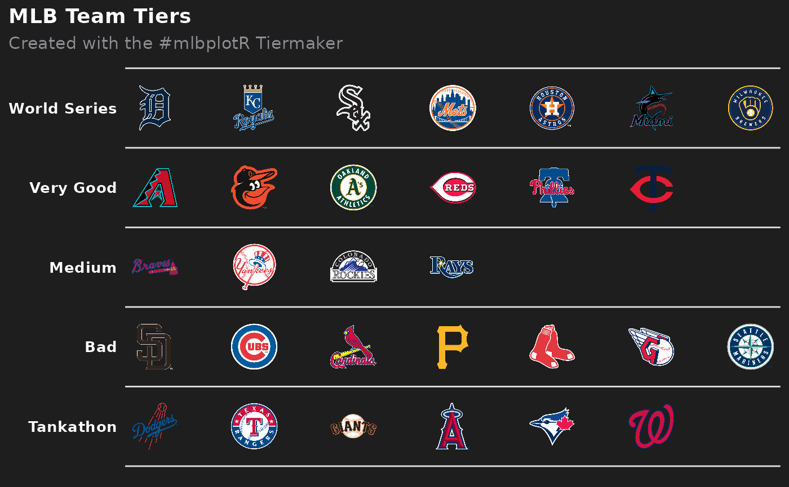
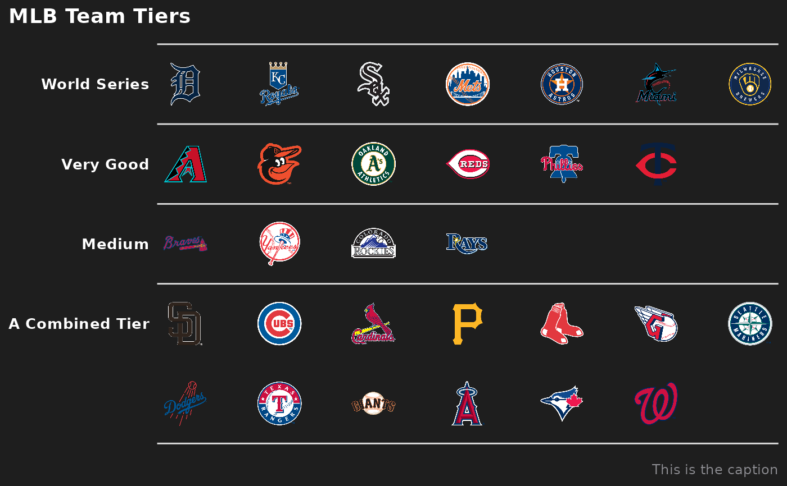
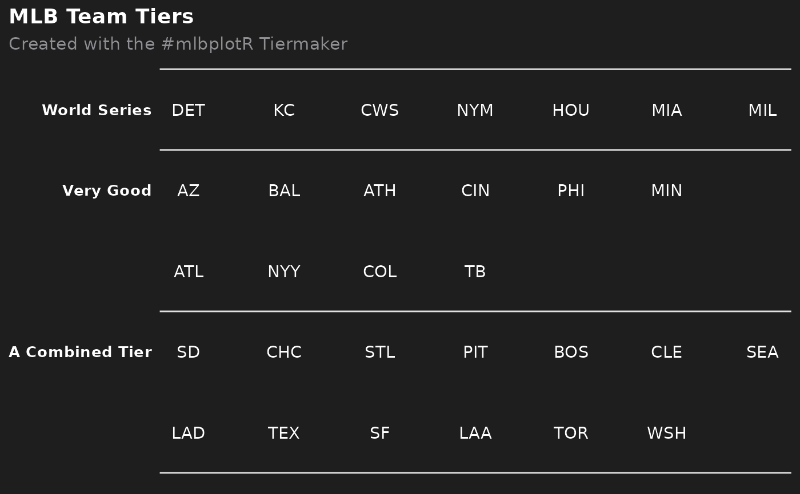

This function sets up a ggplot to visualize MLB team tiers.
Adapted from nflplotR
Usage
mlb_team_tiers(
data,
title = "MLB Team Tiers",
subtitle = "Created with the #mlbplotR Tiermaker",
caption = NULL,
tier_desc = c(`1` = "World Series", `2` = "Very Good", `3` = "Medium", `4` = "Bad", `5`
= "Tankathon", `6` = "", `7` = ""),
presort = FALSE,
alpha = 1,
width = 0.075,
no_line_below_tier = NULL,
devel = FALSE,
background_color = "#1e1e1e",
line_color = "#e0e0e0",
title_color = "white",
subtitle_color = "#8e8e93",
caption_color = subtitle_color,
tier_label_color = title_color,
logo_type = "main"
)Arguments
- data
A data frame that has to include the variables
tier_no(the number of the tier starting from the top tier no. 1) andteam_abbr(the team abbreviation).team_abbrshould be one ofvalid_team_names()and the function tries to clean team names internally by callingclean_team_abbrs(). If data includes the variabletier_rank, these ranks will be used within each tier. Otherwise, ifpresort = FALSE, the function will assume that data is already sorted and ifpresort = TRUE, teams will be sorted alphabetically within tiers.- title
The title of the plot. If
NULL, it will be omitted.- subtitle
The subtitle of the plot. If
NULL, it will be omitted.- caption
The caption of the plot. If
NULL, it will be omitted.- tier_desc
A named vector consisting of the tier descriptions. The names must equal the tier numbers from
tier_no- presort
If
FALSE(the default) the function assumes that the teams are already sorted within the tiers. Will otherwise sort alphabetically.- alpha
The alpha channel of the logos, i.e. transparency level, as a numerical value between 0 and 1. Defaults to 1
- width
The desired width of the logo in
npc(Normalised Parent Coordinates). A typical size is 0.075.- no_line_below_tier
Vector of tier numbers. The function won't draw tier separation lines below these tiers. This is intended to be used for tiers that shall be combined (see examples).
- devel
Determines if logos shall be rendered. If
FALSE(the default), logos will be rendered on each run. IfTRUEthe team abbreviations will be plotted instead of the logos. This is much faster and helps with the plot development.- background_color
Background color for the plot. Defaults to "#1e1e1e"
- line_color
Line color for the plot. Defaults to "#e0e0e0"
- title_color
Text color for the title. Defaults to "white"
- subtitle_color
Text color the the subtitle. Defaults to "#8e8e93"
- caption_color
Text color the the caption. Defaults to be equal to the subtitle
- tier_label_color
Text color for the tier labels. Defaults to be equal to the title
- logo_type
What logo should be used for each team ("main", "scoreboard", or "dot")? Defaults to "main"
Value
A plot object created with ggplot2::ggplot().
Examples
# \donttest{
library(ggplot2)
library(dplyr, warn.conflicts = FALSE)
teams <- valid_team_names()
# remove conference logos from this example
teams <- teams[!teams %in% c("AL", "NL", "MLB")]
# Build the team tiers data frame
# This is completely random!
df <- data.frame(
tier_no = sample(1:5, length(teams), replace = TRUE),
team_abbr = teams
) %>%
dplyr::group_by(tier_no) %>%
dplyr::mutate(tier_rank = sample(1:n(), n()))
# Plot team tiers
mlb_team_tiers(df)

# Create a combined tier which is useful for tiers with lots of teams that
# should be split up in two or more rows. This is done by setting an empty
# string for the tier 5 description and removing the tier separation line
# below tier number 4.
# This example also shows how to turn off the subtitle and add a caption
mlb_team_tiers(df,
subtitle = NULL,
caption = "This is the caption",
tier_desc = c("1" = "World Series",
"2" = "Very Good",
"3" = "Medium",
"4" = "A Combined Tier",
"5" = ""),
no_line_below_tier = 4)

# For the development of the tiers, it can be useful to turn off logo image
# rendering as this can take quite a long time. By setting `devel = TRUE`, the
# logo images are replaced by team abbreviations which is much faster
mlb_team_tiers(df,
tier_desc = c("1" = "World Series",
"2" = "Very Good",
"3" = "",
"4" = "A Combined Tier",
"5" = ""),
no_line_below_tier = c(2, 4),
devel = TRUE)

# }